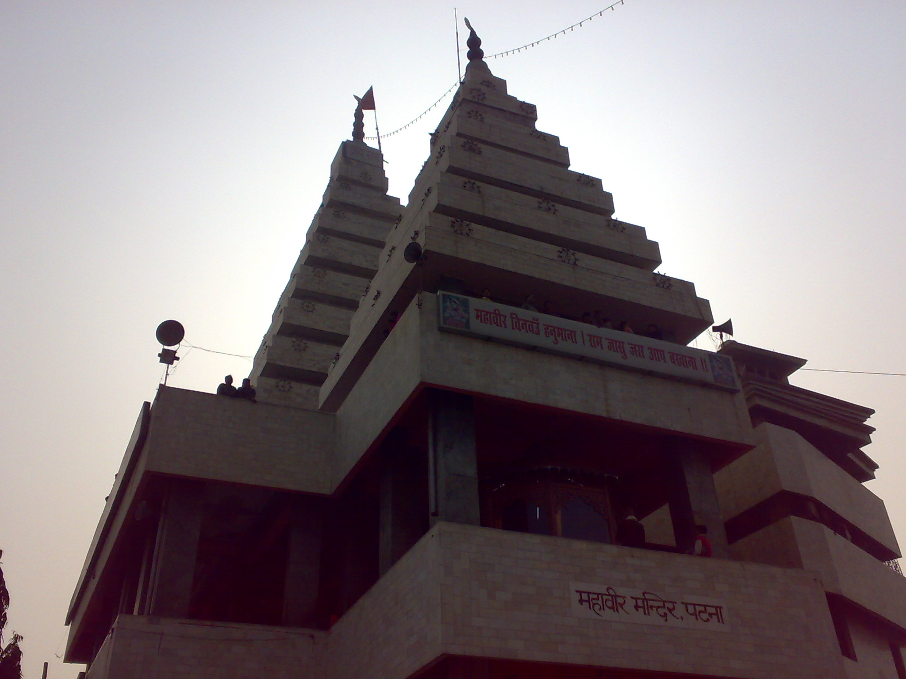
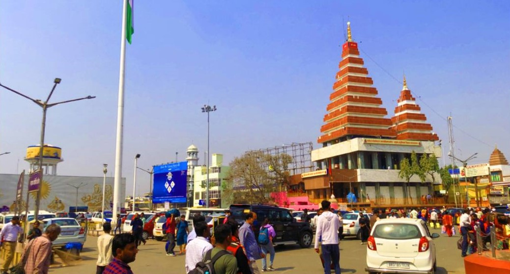
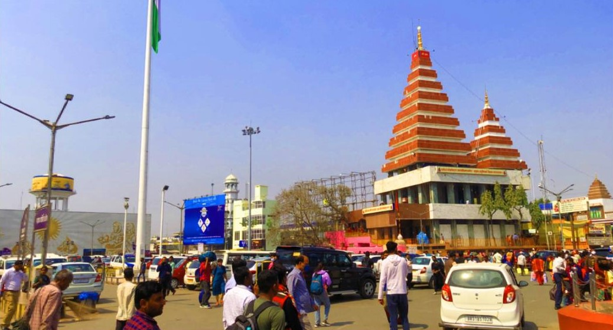

Mahavir Mandir, Patna one of the holiest Hindu temples dedicated to Lord Hanuman, located in Patna,
Bihar, India. Millions of pilgrims visit the temple every year. Acharya Kishore Kunal is the
secretary of the Mahavir Mandir Temple Trust, Patna.
As per the Patna High Court judgment in 1948 the temple exists since time immemorial. This
temple gained popularity in 1947 with large number of Hindu refugees coming to Patna after
the partition of India. Subsequently, temple was rebuilt as a concrete house at same time.
Even this was broken down in 1987 to make a huge marble temple. The idol of Sankat-Mochan stands
in it.
Long winding queues can be seen at the temple on Saturdays and Tuesdays, the traditional worshiping
days of Lord Hanuman. Thousands of people visit Mahavir Mandir on every Ram Navami and New Year
celebration. On every Ram Navami waiting queues grow up to some kilometer long.
Arrangements for free food have been made to the devotees who visit Ramlala at Ram Rasoi.Acharya
Kishore Kunal, secretary of the Shri Mahavir Sthan Nyas Samiti,[8] started it on Sunday 1 December
2019. This free food facility functions in the Amava temple just outside the temple of Ramlala, at
Amawa Mandir Complex, Ramkot, Ayodhya-224123.Devotees who visit Ramlala at Ram Rasoi get free
food between 11:30 am till 3:00 pm every day.
For this, 60 quintals of Govind Bhog shear rice have been sent to Ayodhya.This rice has been sourced
from Mokri village in Kaimur (Bihar). The services of Shri Ram's kitchen and Shri Ramlala's
bhog will function continuously. There is arrangement of feeding one thousand people daily in the
initial phase. After this, based on the increasing number of Ramlala's devotees, food will be
arranged for more and more people. The increasing popularity of Ram Rasoi can be seen in the expenses
visible in the annual reports.
Free Sita Rasoi is being operated by Shri Mahavir Sthan Nyas Samiti at Punaura Dham in Sitamadhi district
of Bihar. This is the first temple in the country, which is successfully running Sita-Rasoi in Sitamadi,
the birthplace of Mata Sita. All the pilgrims are provided free food here. Free of cost Sita Rasoi has been
functioning since 27 January 2019 on behalf of Shri Mahavir Sthan Nyas Samiti. This day coincided with the
birth anniversary of Swami Ramanandacharya in the year 2019. Devotees who visit Mata Janaki's birth-place
are provided with free meals (lunch and dinner both) here. Sita Rasoi was postponed from March 22 due to
COVID-19 Lockdown. It reopened on 2 February 2021 which was again the birth anniversary of Swami
Ramanandacharya in 2021.

 

हनुमान चालीसा Hanuman Chalisa
दोहा
श्रीगुरु चरन सरोज रज निजमनु मुकुरु सुधारि।
बरनउँ रघुबर बिमल जसु जो दायकु फल चारि।।
बुद्धिहीन तनु जानिके, सुमिरौं पवन-कुमार।
बल बुधि बिद्या देहु मोहिं, हरहु कलेस बिकार।।
चौपाई
जय हनुमान ज्ञान गुन सागर। जय कपीस तिहुं लोक उजागर।। रामदूत अतुलित बल धामा।
अंजनि-पुत्र पवनसुत नामा।।
महावीर विक्रम बजरंगी। कुमति निवार सुमति के संगी।। कंचन वरन विराज सुवेसा।
कानन कुण्डल कुंचित केसा।।
हाथ बज्र औ ध्वजा बिराजै। काँधे मूँज जनेऊ साजै। शंकर सुवन केसरीनंदन।
तेज प्रताप महा जग वन्दन।।
विद्यावान गुणी अति चातुर।राम काज करिबे को आतुर।। प्रभु चरित्र सुनिबे को रसिया।
राम लखन सीता मन बसिया।।
सूक्ष्म रूप धरि सियहिं दिखावा। विकट रूप धरि लंक जरावा।। भीम रूप धरि असुर संहारे।
रामचंद्र के काज संवारे।।
लाय सजीवन लखन जियाये। श्रीरघुबीर हरषि उर लाये।। रघुपति कीन्ही बहुत बड़ाई।
तुम मम प्रिय भरतहि सम भाई।।
सहस बदन तुम्हरो जस गावैं। अस कहि श्रीपति कंठ लगावैं।। सनकादिक ब्रह्मादि मुनीशा।
नारद सारद सहित अहीसा।।
जम कुबेर दिगपाल जहां ते। कवि कोविद कहि सके कहाँ ते।। तुम उपकार सुग्रीवहिं कीन्हा।
राम मिलाय राज पद दीन्हा।।
तुम्हरो मंत्र विभीषन माना। लंकेश्वर भये सब जग जाना।। जुग सहस्र योजन पर भानू।
लील्यो ताहि मधुर फल जानू।।
प्रभु मुद्रिका मेलि मुख माहीं। जलधि लांघि गये अचरज नाहीं।। दुर्गम काज जगत के जेते।
सुगम अनुग्रह तुम्हरे तेते।।
राम दुआरे तुम रखवारे। होत न आज्ञा बिनु पैसारे।। सब सुख लहै तुम्हारी सरना।
तुम रक्षक काहू को डरना।।
आपन तेज सम्हारो आपै। तीनों लोक हांक तें कांपै।। भूत पिसाच निकट नहिं आवै।
महाबीर जब नाम सुनावै।।
नासै रोग हरै सब पीरा। जपत निरंतर हनुमत बीरा।। संकट तें हनुमान छुड़ावै।
मन क्रम वचन ध्यान जो लावै।।
सब पर राम तपस्वी राजा। तिनके काज सकल तुम साजा। और मनोरथ जो कोई लावै।
सोई अमित जीवन फल पावै।।
चारों युग परताप तुम्हारा। है परसिद्ध जगत उजियारा।। साधु-संत के तुम रखवारे।
असुर निकंदन राम दुलारे।।
अष्ट सिद्धि नौ निधि के दाता। अस वर दीन जानकी माता।। राम रसायन तुम्हरे पासा।
सदा रहो रघुपति के दासा।।
तुम्हरे भजन राम को भावै। जनम-जनम के दुख बिसरावै।। अन्त काल रघुबर पुर जाई।
जहाँ जन्म हरि-भक्त कहाई।।
और देवता चित्त न धरई। हनुमत सेई सर्व सुख करई।। संकट कटै मिटै सब पीरा।
जो सुमिरै हनुमत बलबीरा।।
जै जै जै हनुमान गोसाईं। कृपा करहु गुरुदेव की नाईं।। जो सत बार पाठ कर कोई।
छूटहिं बंदि महा सुख होई।।
जो यह पढ़ै हनुमान चालीसा। होय सिद्धि साखी गौरीसा।। तुलसीदास सदा हरि चेरा।
कीजै नाथ हृदय महँ डेरा।।
दोहा
पवनतनय संकट हरन, मंगल मूरति रूप।राम लखन सीता सहित, हृदय बसहु सुर भूप।।
Group Leader
21BCS1054 Ritik Kumar


21BCS1598 Sujeet Kumar
Group Members
21BCS2008 Prashant Kumar Singh
21BCS1583 Saurabh Mall
21BCS2276 Aditi Singh